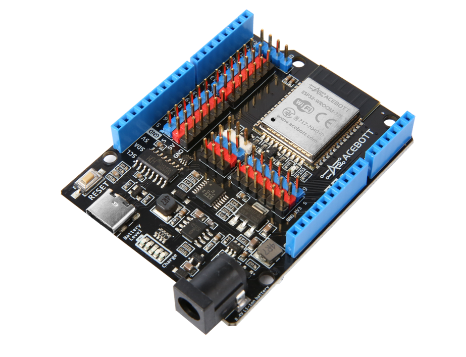
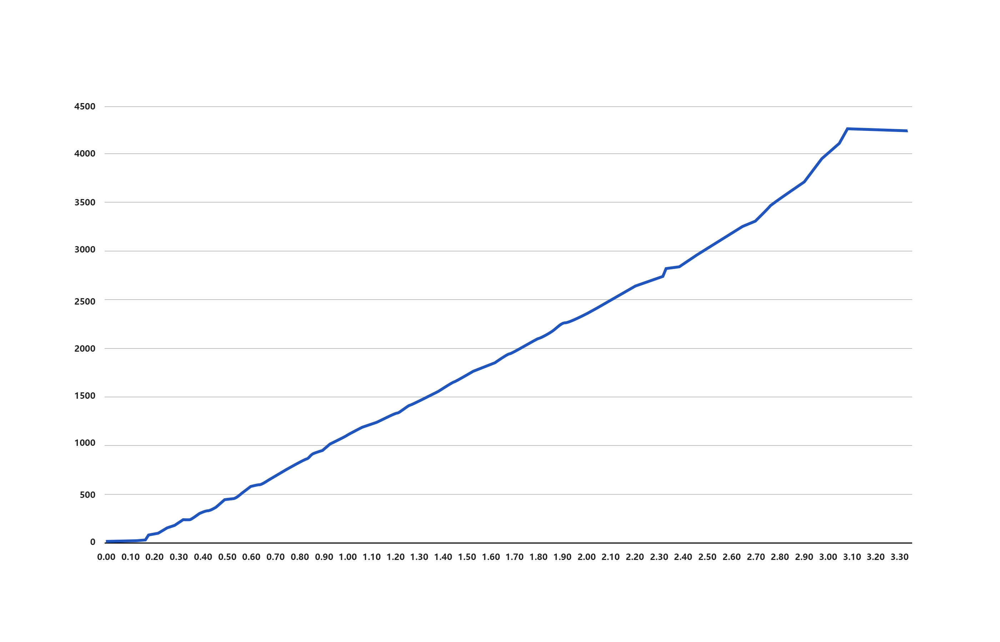
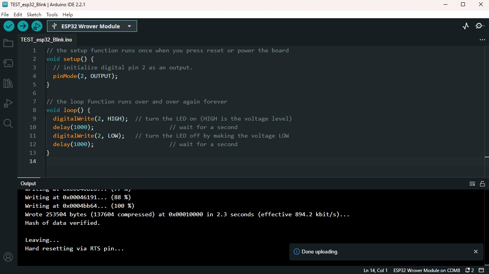
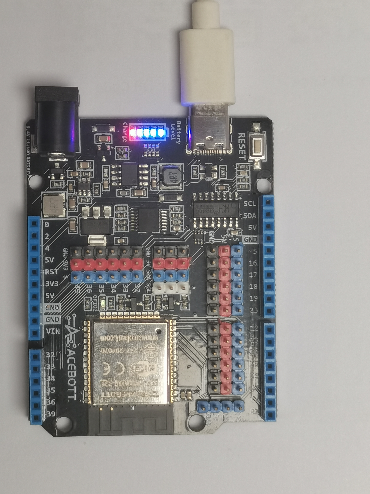

QA016 ESP32 Max V3.0 Controller Board
1.Introduction
The ESP32 Max 3.0 controller board is a low power consumption, high performance microcontroller, very suitable for the development of the Internet of Things. It has a 240 MHz dual-core processor, 520 KB of RAM, and 4MB of flash memory. Built-in WiFi and Bluetooth 4.2 module, available for wireless communication. With 34 GPIO ports, it can connect and control various peripherals.
The ESP32 Max 3.0 controller board is also equipped with a rechargeable function. The controller board has five LED modules, and the first 4 LED lights correspond to the current power of the battery. When the battery is full, the four LED lights are fully on the blue light, and when the power is reduced, the number of lights will also decrease. The fifth light indicates whether the battery is charging, when it is red, it means the battery is charging, when it is not on, it means the battery is full or is not charging.
If you want to know more about ESP32, click here
2.Features
The Type-C interface for enhanced compatibility
The pin interface is rich, to meet the needs of the work construction
Foot color is clear, easy to distinguish and wiring
Configure the charging function to realize the convenient battery charging
Onboard power display light, control the battery status at any time
Parameter |
Value/Description |
|---|---|
Chip |
ESP-WROOM-32E |
Clock |
240MHz |
Ram |
448KB |
FLASH |
4MB |
Interfaces |
UART | I2C | SPI | CAN |
Input Voltages |
8.4V Li-ion battery |
Pinout |
25(DIGITAL) | 15(ANALOG)| 25(PWM) | 2(DAC) | 2(UART) | 2(SPI) | 1（I2C） |

4.Sample Code
Connect the ESP32 Max3.0 controller board to the computer with the Type-C data cable, and then upload the program for controlling the serial port printing.
(1)Wiring Diagram
6.Specialized Functions of Some Pins
Input-only pins
GPIO34 to 39 are input-only pins. These pins have no internal pull-up or pull-down resistors. They can’t be used as output, so you can only use these pins as input:
GPIO 34 / GPIO 35 / GPIO 36 / GPIO 39
Analog-to-digital Converter (ADC)
The ESP32 has an 18 x 12-bit ADC input channel (whereas the ESP8266 only has a 1 x 10-bit ADC). These are the GPIOs that can be used as ADCs and corresponding channels:
ADC1_CH0 (GPIO 36) / ADC1_CH1 (GPIO 37) / ADC1_CH2 (GPIO 38) / ADC1_CH3 (GPIO 39) / ADC1_CH4 (GPIO 32) / ADC1_CH5 (GPIO 33) / ADC1_CH6 (GPIO 34) / ADC1_CH7 (GPIO 35)
ADC2_CH0 (GPIO 4) / ADC2_CH1 (GPIO 0) / ADC2_CH2 (GPIO 2) / ADC2_CH3 (GPIO 15) / ADC2_CH4 (GPIO 13) / ADC2_CH5 (GPIO 12) / ADC2_CH6 (GPIO 14) / ADC2_CH7 (GPIO 27) / ADC2_CH8 (GPIO 25) / ADC2_CH9 (GPIO 26)
Digital Analog Converter (DAC)
There are 2 x 8-bit DAC channels on the ESP32, which are used to convert the digital signal into an analog voltage signal output. These are the DAC channels:
DAC1 (GPIO25) / DAC2 (GPIO26)
PWM
The ESP32 LED PWM controller has 16 independent channels and can be configured to generate PWM signals with different characteristics. All pins that can be output can be used as PWM pins (GPIOs 34 to 39 cannot produce PWM).
I2C
ESP32 has two I2C channels and any pin can be set to SDA or SCL. When using ESP32 with Arduino IDE, the default I2C pin is:
GPIO 21（SDA） / GPIO 22（SCL）
If you want to use another pin, when using the wire library, just call: Wire.begin(SDA, SCL);
SPI
By default, the SPI pin map is:
SPI |
MOSI |
MISO |
CLK |
CS |
|---|---|---|---|---|
VSPI |
GPIO 23 |
GPIO 19 |
GPIO 18 |
GPIO 5 |
HSPI |
GPIO 13 |
GPIO 12 |
GPIO 14 |
GPIO 15 |
Strapping pins
GPIO 0 / GPIO 2 / GPIO 4 / GPIO 5 ( Must be high during startup ) / GPIO 12（ Must be low during startup ） /GPIO 15（ Must be high during startup ）
These pins are used to put the ESP32 into bootloader or burn mode. On most development boards with built-in USB/Serial, you don’t need to worry about the status of these pins. The pin is in the correct burn or boot mode by default. If you have some peripherals connected to Strapping pins and you are having problems uploading code or burning your ESP32, it may be because these peripherals are preventing the ESP32 from entering the correct mode. Read the boot mode selection documentation to guide you through making these pins work as expected after reset, burn, or boot.
Pins HIGH at Boot
Some GPIOs change their state to high or output PWM signals upon startup or reset. This means that if the output is connected to these GPIOs, you may get unexpected results when the ESP32 is reset or restarted.
GPIO 1 / GPIO 3 / GPIO 5 / GPIO 6 to GPIO 11 (connected to the ESP32 integrated SPI flash memory – not recommended to use). / GPIO 14 / GPIO 15
Enable (EN)
Enable (EN) is the chip enable pin. This means you can use the button connected to that pin to restart the ESP32.
High level: Chip enabled
Low level: Chip disable
7.Notice
1.ADC2 pins cannot be used when using Wi-Fi. So if you are on Wi-Fi and you can’t get a value from the ADC2 GPIO, you might consider using the ADC1 GPIO instead.
2.The ADC input channel has a 12-bit resolution. This means that you can get analog readings between 0 and 4095, where 0 corresponds to 0V and 4095 corresponds to 3.3V. You can also set the resolution of the channel as well as the ADC range on the code.
3.ESP32 ADC pins do not have linear behavior. You might not be able to distinguish between 0 and 0.1V, or 3.2 and 3.3V. You need to keep this in mind when using ADC pins. You will get a behavior similar to the one shown below.
8.Detailed Use with ARDUINO Software as follows:
Step1 | Download the Arduino environment (IDE)
Step2 | Install the ESP32 plugin in the Arduino IDE
Step3 | Download CH340 Driver
Step4 | Upload the LED lighting program
Connect the board to the computer using a Type-C data cable.The red power LED should go on.

Select “ESP32” -> “ESP32 Dev Module” from the Tools > Board menu

Select the serial device of the board from the Tools | Serial Port menu. This is likely to be COM8 or higher (COM1and COM2 are usually reserved for hardware serial ports). To find out, you can disconnect your board and re-open the menu; the entry that disappears should be the board. Reconnect the board and select that serial port. Here you should select COM 8 as below.

You also can find the right ports shown on Device Manager.

Upload the Program.
1// the setup function runs once when you press reset or power the board
2void setup() {
3 // initialize digital pin 2 as an output.
4 pinMode(2, OUTPUT);
5}
6
7// the loop function runs over and over again forever
8void loop() {
9 digitalWrite(2, HIGH); // turn the LED on (HIGH is the voltage level)
10 delay(1000); // wait for a second
11 digitalWrite(2, LOW); // turn the LED off by making the voltage LOW
12 delay(1000); // wait for a second
13}
click the “Upload” button to upload the code. will appear in the status bar.

Wait a few seconds. If the upload is successful, the message “Done uploading.”
And the LED on the board blink.
If your tests were successful, you can try to upload the following code. When a network is found in the environment, the number and name of all nearby networks will be obtained and displayed in the serial port, and the indicator will light up.
1/*
2When a network is found in the environment,
3the number and name of all nearby networks will be obtained and displayed in the serial port,
4and the blue indicator will light up.
5*/
6#include "WiFi.h"
7void setup()
8{
9 Serial.begin(115200);
10 pinMode(02,OUTPUT);
11 //set WiFi to station mode and disconnect from an AP if it was previously connected
12 WiFi.mode(WIFI_STA);
13 WiFi.disconnect();
14 delay(100);
15 Serial.println("Setup done");
16}
17void loop()
18{
19 Serial.println("scan start");
20 // WiFi.scanNetworks will return the number of networks found
21 int n = WiFi.scanNetworks();
22 Serial.println("scan done");
23 if (n == 0) {
24 Serial.println("no networks found");
25 } else {
26 Serial.print(n);
27 Serial.println(" networks found");
28 digitalWrite(2, HIGH);//the blue indicator lights up
29 for (int i = 0; i < n; ++i) {
30 //print SSID and RSSI for each network found
31 Serial.print(i + 1);
32 Serial.print(": ");
33 Serial.print(WiFi.SSID(i));
34 Serial.println((WiFi.encryptionType(i) == WIFI_AUTH_OPEN)?" ":"*");
35 delay(10);
36 }
37 }
38 Serial.println("");
39 // wait a bit before scanning again
40 delay(5000);
41}
The serial port display effect diagram is as follows：

9.Package List
ESP32 Max V1.0 Controller Board * 1pcs
Type-C cable * 1pcs